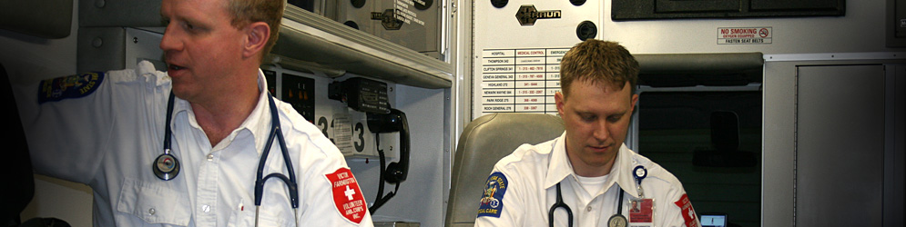

Services: Emergency Medical Services
Victor Farmington Volunteer Ambulance is a locally based ambulance and advanced life support service agency, certified at the highest level in pre-hospital medical services. Our agency maintains qualified personnel at the station 24 hours a day.
Emergency calls have grown by 84 percent in the past 10 years and are expected to increase each year. The coverage area is 75 square miles of rapidly developing country side. On a daily basis the staffing includes multiple crews in quarters or sub-stations located within the towns served to respond to multiple simultaneous emergencies.
Staffing multiple duty crews has allowed the Ambulance Corps to maintain high call coverage - about 96 percent - and reduce the need to request mutual aid (assistance from neighboring ambulance districts) for emergency services.
